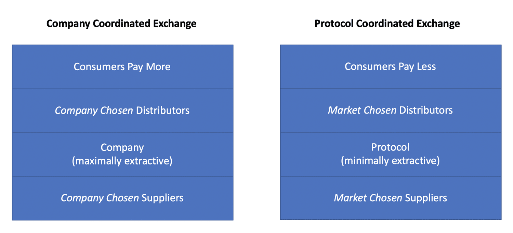

A recent Flipside Crypto post alarmed me when it stated the following: “Despite labeling themselves as decentralized networks, protocols, foundations, and frameworks, cryptocurrency projects are, in fact, businesses – that will fail to succeed if they don’t start thinking of themselves that way awfully fast.” I respect Flipside and what they’re working towards with the Fundamental Crypto Asset Score (FCAS), but fear that encouraging protocols to think of themselves exclusively as businesses will defeat the promise of protocols in the first place.
Protocols provide structure for businesses, but are not businesses themselves; they are systems of logic that coordinate exchange between suppliers (businesses) and consumers of a service. As coordinators of exchange, protocols should be minimally extractive, whereas businesses are incentivized to be maximally extractive (that’s profit, and a business is valued as a multiple of its profit).
From this angle, protocols can be seen as routers of economic activity. Just as the routers of the internet are as lean and efficient as possible, so too should crypto’s protocols trend.
The less extractive a protocol is in coordinating exchange, the more that form of exchange will happen. Matt Ridley argued that the emergence of exchange is what allowed humans to unlock the magic of competitive advantage, and its associated innovation and progress. If that’s the case, facilitating exchange is a sacred position in society.
To avoid confusion, I should note minimal extraction doesn’t mean cryptoassets that capitalize protocols will capture minimal value; if something is minimally extractive, but globally produced and consumed, the coordinating asset can capture a significant amount of value.
To further unpack protocols as coordinators of exchange, we’ll investigate the:
Protocol
Suppliers
Distributors
Consumers
Market
Protocol
Protocols encode the rules of engagement that coordinate the exchange of a service between a global supplier and global consumer.
Both the supplier and consumer must strictly abide by the rules of engagement; if they don’t, they won’t get paid (supplier) or won’t receive the service (consumer). There’s no special deal for any suppliers, distributors or consumers. The flatness with which a protocol treats everyone that interfaces with it is part of what drives its efficiency as a coordinator of exchange (no room for human corruption or capture).
Such strictness means the supplier and consumer don’t need to know each other, and without knowing each other they also have zero-recourse in meatspace-land, where things can get messy, slow and expensive. Having minimal base systems of production should allow these discrete services to be produced at lowest cost. If recourse is bundled into the base layer, then everyone pays for it, as opposed to those who actually need it.
While a protocol allows for fluid exchange between a supplier and consumer, the logic that makes up the protocol is just code that has no cares about profitability. If you want to argue that protocols are a business, show me Bitcoin’s income statement.
Suppliers
The suppliers (or supply-side) of a cryptonetwork are businesses.
Supply-siders include miners, stakers, voters, judgers, transcoders, location-providers, and any other supplier of a network’s core service. Right now, protocols mostly coordinate suppliers of machine work, but I expect them to shift to be increasingly human work (think Lyft, Doordash, etc) as crypto matures.
These supply-siders do have income statements and must worry about profitability. If a supply-sider runs unprofitably for too long, they’ll shut down. But that doesn’t mean the protocol shuts down. The protocol only shuts down when the last supplier goes offline because they, too, were running unprofitably. If no supplier can run profitably it’s likely a poorly designed protocol, or one supplying an unneeded or overly crowded service.
Over time, the suppliers of these protocols will run on thin margins as they are connecting into a globally accessible protocol where suppliers who produce at lowest cost out-compete their more inefficient peers.
In the short to medium term, suppliers’ margins may remain elevated for two separate reasons, depending on whether they’re producing a novel service or existing service. In cases where a novel service is provided, there’s no preconception of what should be paid. It’s then easy for the consumer to overpay in the process of price discovery, and the situation is further muddied by the use of inflation as a supply-side subsidy in the early days.
In cases where an existing service is produced, but the costs of production are much lower than what exists outside of crypto, then the protocol’s suppliers can offer it to consumers at much lower prices than non-crypto forms of production can, while still maintaining healthy margins. One could argue that fat margins early is one way suppliers are compensated for the risk they’re taking as pioneers in cryptoland.
Distributors
While suppliers can be thought of as sitting beneath a protocol, producing the discrete service(s) that the protocol specializes in, distributors can be thought of as sitting on top of the protocol and delivering those services to the consumer. Often, distributors bundle protocol services and provide extra-layers of insurance and customer protection.
Distributors are not imperative for every consumer (tech-savvy ones can go straight to the protocol), but I believe the majority of consumers will access protocol-produced-services through candy-coated distributors. For an example of this, look at how many people hold the private keys that control their bitcoin, versus store their bitcoin on a distributor like Coinbase.
Just as any supplier can plug into a protocol, so too can any distributor. Therefore, both suppliers and distributors are subject to market competition, as opposed to the proprietary selection process that a company goes through for its suppliers and distributors. Competitive markets kill inefficiencies and drive down costs, which should allow protocol-coordinated-services to outcompete company-coordinated-services, accruing to the consumer’s benefit (shown below).

Consumers
The consumers (or demand-side) of a cryptonetwork pay in one way or another to use the network’s service. They can pay via transaction fees, inflation, staking, or any number of to-be-invented mechanisms. Some mechanisms are less obvious than others (e.g., inflation), hiding the cost from the consumer, but they all require the consumer to pay.
Consumers that interface directly with the protocol will only pay the suppliers, while consumers that access the protocol’s service through a distributor will end up paying both the suppliers and the distributor (doing so if the combination remains novel or lower cost than alternatives).
Payment is critical to feed suppliers’ and distributors’ businesses. While individual consumers can set gas limits and transaction fees, it is the market of consumers that dictates the accepted range of payment.
Market
The market allows for global consensus on the pricing of the service(s) and the worth of the network’s native cryptoasset.
The pricing of a protocol’s service has been contentious from as far as I can remember, dating back to early Bitcoin “fee market” debates. It has since spread to the rest of crypto as other networks mature and have enough demand to price some consumers out.
At a minimum, consumers have to be willing to pay enough to cover a supplier’s cost, and if using a distributor, also covering the distributor’s cost. If the service is highly valued by its consumers, and in short supply, then consumers will bid up the price to pay suppliers and distributors well above cost, making them a healthy profit. However, as stated in the sections on suppliers and distributors, open-market forces will be ruthless on margins over time.
Turning to how the market values the cryptoasset, it depends primarily on the governance, the supply-schedule of the asset, and how value flows to suppliers (note that the governance can change the design of the other two variables).
This is a deep, deep topic, so the simple thing I’ll emphasize here is a cryptoasset is used as the incentive layer to tie the suppliers, distributors and consumers together. While the rules that drive a cryptoasset’s value can feel similar to a profit-driven business, if you look more closely they are typically providing the incentive to connect profit-driven businesses with consumers.
A note about funding core developers
What Flipside may have been trying to say is developers of protocols need to find ways to put food on the table. Living off the assets of a foundation, no matter how big the treasury, is still living off assets. If the asset pool is not regularly replenished in some way, then it’s not long-term sustainable, no matter how high you expect the cryptoasset’s price to go (though it may suffice for a few decades).
That said, running a business is not the only way for a core team to fund development. Already we see plenty of experimentation, such as inflation funding (e.g., Decred, Zcash) and volunteer funding (e.g., MolochDAO, Grin). I expect future experiments around transaction fee funding or ongoing capital raises through community-approved mini-dilutions.
To conclude
Any unnecessary extraction from the process of exchange is a tax that will ultimately be weeded out by copy-paste competition in the world of open-source protocols. While this presents a brave new world for businesses, minimizing extraction should accrue to the benefit of all of us as consumers.